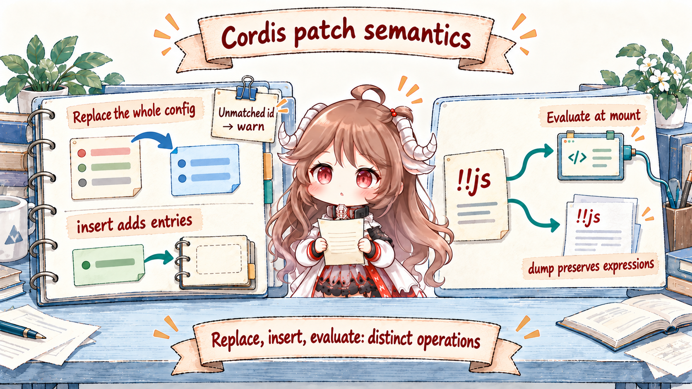
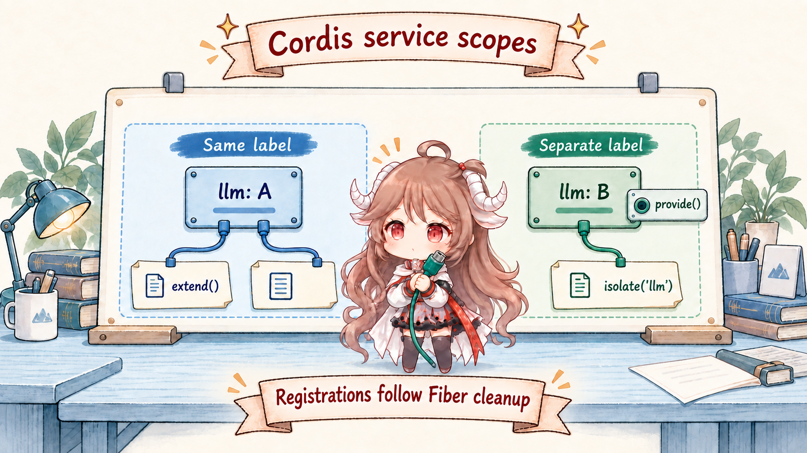
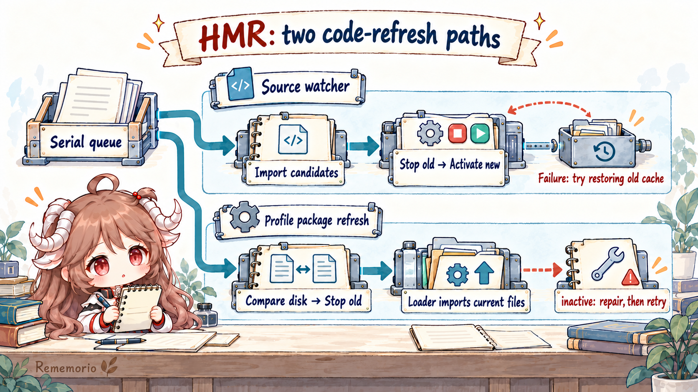

Part I crossed more than a dozen plugins in one turn: a model adapter prepared the request, prompt and tool assemblies met before a step, persistence subscribed to SessionEvent, approval and sandbox plugins governed effects, and Web observed the same run. Why can those components be replaced without trampling startup order, dependencies, and cleanup?
DSH uses two complementary protocols. Before boot, applyEntryPatches() compresses several sources into one deterministic configuration tree. After boot, Cordis Context, Service, and Fiber decide where a capability is visible, when it may activate, and who releases it.
Reading contract.After this chapter, you should be able to explain why a profile override must restate a complete config; why !!js must not evaluate during a config dump; how extend() and isolate() produce different service resolution; why a plugin stays PENDING without an injection; and why configuration reconciliation and module replacement share one HMR queue without sharing one transaction guarantee.
Evidence boundary.The chapter is pinned to 687f282. DSH carries its patched Cordis fork under vendor/, so Context, Service, and Fiber claims come from the same snapshot.
1. Compose one tree before anything starts
1.1 Boot and dump share the same algorithm
vendor/include exports the pure function applyEntryPatches(data, patches, warn). composeEntries(), the boot include, and dsh --dump-config all call it. The diagnostic tree and mounted tree therefore share one id index, insertion order, and warning policy.
This prevents a subtle but severe failure: a dump tool that deep-merges while boot replaces whole objects could show a valid-looking configuration that never runs. DSH prefers an explicit failure over a split between displayed and effective configuration.
1.2 Patches replace complete fields in order

PatchOptions has two central actions: find an entry by id and replace fields, or add entries through insert. The critical DSH rule is that an id-targeted patch replaces the entire config; it does not recursively merge fields. Any bundle setting that must survive has to be restated.
- id: llm-deepseek
config:
model: deepseek-chat
apiKey: !!js process.env.DEEPSEEK_API_KEY
- insert:
- id: local-plugin
name: ./local-plugin.mjsThe YAML parser preserves !!js as an expression node. The Loader waits until declared injections are active, then resolves it through internal/config in the entry's own context. --dump-config prints the expression verbatim, so a diagnostic command does not depend on runtime environment or trigger its effects.
An entry inserted earlier in one list is immediately indexed, allowing later patches to configure or disable it. An unmatched id is sent to warn(); config dumps also identify its layer. A misspelled plugin id becomes a visible diagnostic.
1.3 Discover schemas, then persist a complete override
generateConfigSchema() composes the same patch layers into entries and emits JSON Schema 2020-12, with partial results and diagnostics under x-cordis. Collection covers disabled entries, native groups, and statically discoverable includes; detached trees created by Agent presets require separate observation. Collection imports modules and executes Config getters and lazy builders. Plugin mounting, expression evaluation, and schema validator/transform callbacks remain in their respective runtime stages.
Config Editor persists a page edit in the profile patch. Under the manifest writer lock, it rereads configuration, confirms that the target remains a uniquely addressable root Include entry with an ACTIVE Fiber, and validates the complete candidate. Matching the inherited configuration removes redundant config overrides; otherwise it saves a complete config, preserving YAML comments and expressions outside the changed portion. If a home or CLI overlay changes the effective candidate, editing fails before writing. After an atomic save, it requires successful target activation; failure restores the original document and reconciles the old patch.
A compatibility preflight also runs before plugin imports during profile startup and recomposition. Rejected rows are disabled in a detached runtime configuration. --dump-config still shows configured rows; a rejected Bundle contributes no patches, while its selection and diagnostics remain available for repair. Part VII explains version requirements and exact exemptions.
2. Context defines the local world of service resolution
2.1 The root Context installs four built-in services
Context constructs a root Fiber and installs reflect, registry, events, and logger. Context is a Proxy: normal property reads go through the service resolver, while methods such as ctx.plugin(), ctx.inject(), and ctx.on() are mixed in by the built-ins.
A plugin's ctx is a scoped view carrying a parent chain, isolation map, intercept map, and current Fiber. Two plugins reading ctx.llm can resolve different providers when their scope labels differ.
2.2 extend inherits; isolate redirects one service domain

extend(meta) creates a prototypal child without mutating its parent. With no isolation change, service reads keep the same label. isolate(name, label) copies the isolation map and changes only the selected service name. Provides and reads beneath that child enter a new resolution domain; all other services continue through the parent scope.
This fits an agent runtime well: a subtree may replace its LLM, session store, or approval provider without cloning the application. The same label can deliberately join two branches. intercept(name, config) keeps the provider identity but merges service-specific configuration from root toward the current scope.
| Operation | What it changes | What it preserves |
|---|---|---|
extend() | Adds metadata to a child context. | Service labels and the parent object remain unchanged. |
isolate() | Redirects one service name to another label. | All other services inherit normally. |
intercept() | Adds local configuration for one service. | Does not replace the provider. |
provide() | Registers an implementation in the current label. | The registration belongs to its Fiber. |
3. Service couples capability registration to ownership
3.1 Constructing a Service registers the provider
The Service base calls ctx.reflect.provide(name, this, check) from its constructor. The provide operation becomes an effect owned by the current Fiber, and the provider disappears automatically when that Fiber unloads.
export class SessionStore extends Service {
constructor(ctx: Context) {
super(ctx, 'sessions')
}
}
await ctx.plugin(SessionStore)
const store = ctx.get('sessions')That removes the dangling state in which a plugin has unloaded but its service still points at an old instance. Callable services, Config schemas, and intercept configuration stay on the same contract. Consumers declare injection names.
3.2 Injection determines activation
After a runtime declares required services, Registry creates a Fiber. Missing dependencies keep it PENDING. When providers appear, the Fiber enters LOADING, snapshots their implementations, then resolves and validates configuration; only a completed callback and init hooks make it ACTIVE. Provider replacement or disappearance unloads the old activation or returns it to a waiting path.
Startup order follows a dependency graph. Entry order still affects the tree and hook order, but an unavailable capability is never represented as an active plugin that may fail later at an arbitrary read.
4. Fiber turns lifecycle into structured ownership
4.1 Every effect belongs to the current Fiber
Fiber tracks validated configuration, required-service snapshots, effects, disposers, errors, and state transitions. Resources created through ctx.on(), ctx.provide(), or ctx.effect() join that Fiber; unload starts disposers in reverse registration order and waits for all of them to settle.
Reverse order means later synchronous cleanup starts first. Because _unload() awaits the batch with Promise.all, asynchronous disposers need not finish serially. If an event stream must finish stopping before a worker terminates, put both steps in one async disposer with an explicit await. Repeated disposal joins cleanup already in progress.
4.2 Ordinary and volatile configuration follow different lifecycles
Loader handles ordinary configuration changes through teardown and activation. When only fixed fields marked volatile by the schema change, the Fiber is ACTIVE, and its context is unchanged, Loader retains the Fiber, updates its Volatile references, and emits loader/volatile-update to that Fiber. Validation failure retains the running values while keeping the new raw configuration for the next activation. If resolution also changes an ordinary value, the normal lifecycle applies. A plugin can therefore read mutable settings through references while retaining resource ownership.
Configuration reconciliation awaits both previously held Fibers and the current Loader, including cleanup for entries already removed from the store. Outcome checks normally report PENDING service dependencies as warnings. Explicitly required targets, targets that were ACTIVE before stopping and then fail, and other newly introduced failures reject application. Config Editor explicitly requires its target, giving an edit a stricter success condition than general recomposition.
4.3 HMR shares a queue; source and package refresh have distinct recovery rules

runExclusive() serializes configuration writes, Include refreshes, and module replacement, rejecting nested transactions. Package downloads and installation run outside the queue; successful installation enters application afterward. Even with root: [], HMR watches the profile Bundle list and profile/home patches; source watching requires configured roots. External dependency-only manifest changes take effect at the next recomposition or restart.
The source watcher's partialReload() imports candidate modules, deletes old registrations and awaits their Fibers, then registers and awaits replacements. Import failure restores module caches. Replacement activation failure removes replacements, restores caches, and attempts to register old implementations again. Services may be interrupted between stopping the old implementation and completing recovery.
Profile/package refresh uses reconcileProfile(): compare loaded modules with disk files, evict affected caches and stop old implementations, then publish package resolution and recompose configuration. Loader imports current files only for enabled entries that pass compatibility checks. This path discards the old cache backup. A replacement that fails to import or activate remains inactive; a later recomposition retries after file repair or dependency installation. Tests cover linked-package changes, replacement failure, and recovery after repair.
Package code changed in place can therefore reload live. Host modules, plugins outside Loader ownership, moved resolution directories, or unavailable module comparison produce a specific restartReason. Ordinary configuration editing calls reconcileProfilePatches() to reconcile configuration; full recomposeProfile() also publishes resolution and retries failed imports. Profiles without HMR read new configuration on their next startup.
5. Four questions locate composition failures
- Was the tree composed correctly?Use
--dump-configto verify ids, insertion positions, layer sources, and whole-config replacement. - Did the module resolve?Check the profile module resolver, installation and profile dependency sources, and the entry's base URL.
- Are dependencies satisfied?Inspect a PENDING Fiber and whether provider and consumer use the same isolation label.
- Did lifecycle converge?Verify failed generations, provider replacement, and disposal.
Those are composition, resolution, injection, and ownership failures. Calling all four “the plugin did not load” forces debugging to bounce between YAML, imports, service lookup, and leaked resources.
Part III moves from the plugin tree to SessionEvent. When the loop, tools, and UI are replaceable, what remains the shared runtime fact? DSH's answer is that model-visible state must first enter a projectable event log.
Source references
- profile-boot.ts and profile.ts: bundle, profile, home, and CLI patch layers.
- vendor/include: PatchOptions, expression nodes, and applyEntryPatches.
- Context, Service, and Fiber: scopes, capabilities, and lifecycle.
- app-boot README: mounting, config dumps, user patches, and activation diagnostics.
- DSH HMR: the shared queue, configuration watches, module teardown, and failure recovery.